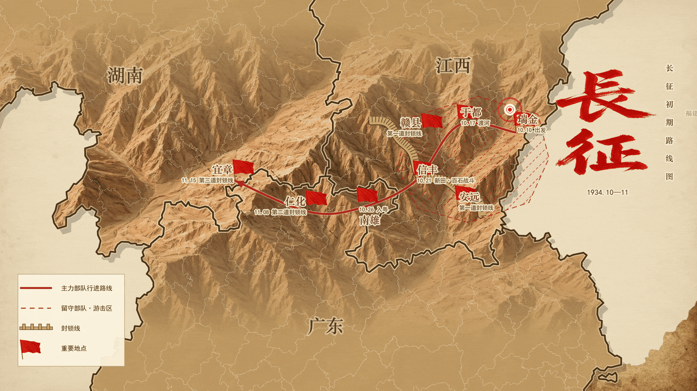
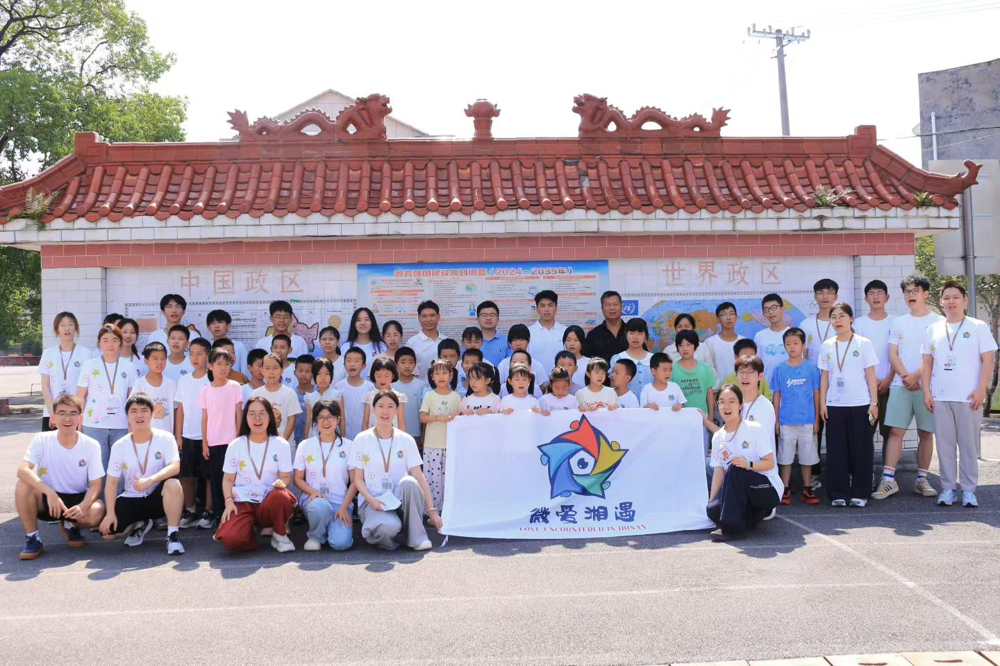

一张地图，展开西进的起步
2026年7月20日至23日，微爱湘遇队员走访新屋里毛泽东旧居、信丰县博物馆和南雄市博物馆，以实地研学、现场记录与文献整理，追寻红军突破第一道封锁线的历史。

查看路线原图 ↗路线图由微爱湘遇实践队整理绘制。动图加载较慢时可切换静态图。
四天赣粤行 ／ 四站现场录音 ／ 七位英烈事迹
选择一站，听一段历史
扫描原有二维码，或直接点击播放器，聆听队员在场馆采集的讲解录音。
七位英烈，七段不应忘却的故事
从突破封锁线，到策应突围，再到主力长征后的留守斗争。我们按不同历史阶段整理英烈事迹，沿着人物走进历史。

从初战现场，到乡村课堂
赓续九年支教积累，微爱湘遇把长征故事带回茶陵。地图、英烈事迹与实景微团课成为可以接力使用的课堂素材，让下一批队员继续讲述这段历史。